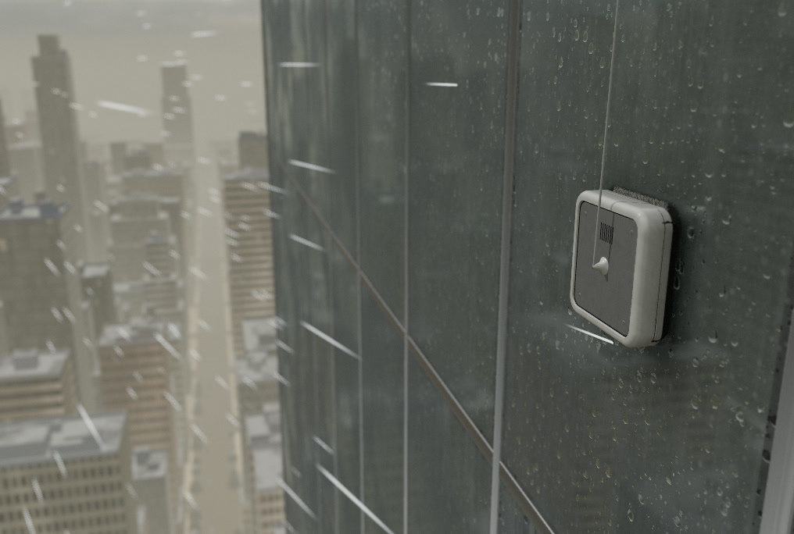

Home

Simulated. Replay of a recorded run.0:17 / 10:008x
Latest batch: window cleaning robot
Replay shown: dubai_tower.world
33Worlds run
2Passed
27Failed
4Safe holds
In this replay, wind of 20.9 m/s is above the robot's 10 m/s limit. It holds still and cleans 0.7%.
Recent runs
| Run | Robot | Worlds | Outcome | Result |
|---|---|---|---|---|
| Window batch | Window cleaning | 33 | 2 passed, 27 failed, 4 safe holds | |
| Inspection batch | Plant inspection | 34 | 16 passed, 18 failed | |
| Fix retest, patched | Window cleaning | 104 | 17 passed, 60 failed, 27 safe holds | |
| Fix retest, baseline | Window cleaning | 104 | 11 passed, 67 failed, 26 safe holds | |
| campaign_dubai_final | Window cleaning | 52 | 3 passed, 36 failed, 13 safe holds | |
| Control worlds | Window cleaning | 10 | 10 passed |
Open work
4
- Decide on detach: 9 worlds
The robot was already at full suction in 5 of 9. The controller has no more force to command.
Critical - Review patch: suction 0.85 to 0.9
7 better, 0 worse on 104 new worlds. It also removes the low-pressure guard. Not applied.
High - Check a fix on Detach on turns
Hidden worlds are running: 7 of 12. Sample
- Send 10 untested factors to a bounty
Safety tether, sensor faults, pump faults and 7 more. No function can model them yet.